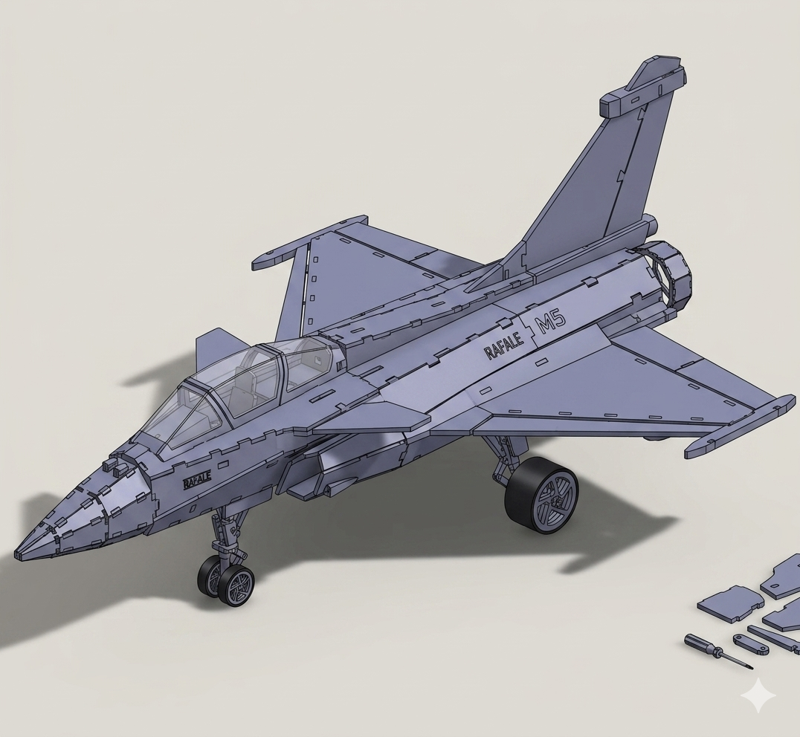

Présentation du projet
Le projet SLR est une SAE réalisée pour Toy Corporation, encadrée par F. AUGEREAU. En équipe EQ01, j'ai occupé le rôle de technicien rédacteur et conçu la carte Lumière — une carte PCB simple face pilotant trois LEDs pour simuler les feux de navigation d'un Rafale miniature.
L'objectif : une LED jaune clignotante (feu de navigation, période 1,9 s / temps actif 100 ms) et deux LEDs rouge et verte en continu (feux d'extrémité d'aile), toutes à 500 mCd.
Développement technique
Schémas & fabrication
 Liste des composants
Liste des composants
Diamètres de perçage : 0,8 mm (résistances) · 1,2 mm (NE555) · 1,5 mm (connecteurs)
Vérification du produit (DDV)
Période mesurée : 2,12 s (attendu 1,9 s · écart 12 % · tolérance ±20 %)
Temps actif mesuré : 104 ms (attendu 100 ms · écart 4 % · tolérance ±20 %)
Les trois LEDs (jaune, rouge, verte) vérifiées à 500 mCd ±50 % via mesure de tension et calcul de courant.
Sous 5 V (courant < 1 mA) : LED jaune clignote · LEDs rouge et verte allumées en continu.
Mesures réalisées sur banc — alimentation de table et oscilloscope Tektronix TBS 1052B-EDU.
 Essai sous alimentation 5 V
Essai sous alimentation 5 V
 Période — 2,12 s à l'oscilloscope
Période — 2,12 s à l'oscilloscope
 Temps actif — 104 ms à l'oscilloscope
Temps actif — 104 ms à l'oscilloscope